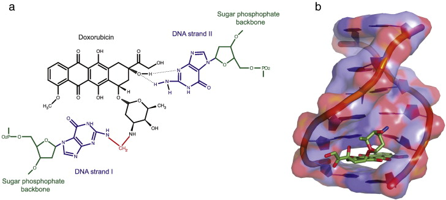
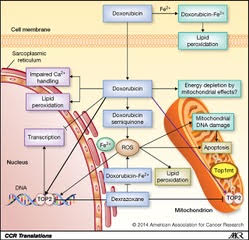
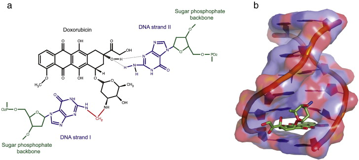
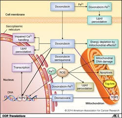

Any drug or treatment that can destroy cancerous cells, therefore, is of prime importance. Tumors of appropriate size, location, and type may be surgically removed. After surgery, swelling, drainage, bruising, or infection can result at the site of surgical treatment. Pain is common, and appetite loss and fatigue often result (Cancer.net Editorial Staff, 2016). Targeted radiation is used to destroy cancerous cells as their mutated genomes are more susceptible to further damage. However, radiation therapy can still damage healthy cells exposed to radiation near the irradiated site (Cancer.net Editorial Staff, 2017). These common treatments, however, fail to fight cancer outside a specific location; instead, chemotherapy treatments use chemicals that circulate throughout the body and destroy cancerous cells as well as some healthy cells (“Chemotherapy to Treat Cancer”). This often results in hair loss and blood disorders, since chemotherapeutic drugs damage hair follicles and inhibit the production of red blood cells in bone marrow (“Chemotherapy to Treat Cancer”). As with other treatments, pain and nausea can result. These chemicals may include those that inhibit specific components of cell division or the cell cycle or may cause cell death (Yang, et al). Doxorubicin, a specific cancer drug part of the anthracycline class of anticancer drugs, uses several methods to prevent the division or function of cancer cells, including intercalation between hydrogen-bonded Guanine and Cytosine as well as Topoisomerase II poisoning (Yang, et al).
A critical side effect of doxorubicin treatment is myotoxicity. Treatment with doxorubicin has been found to downregulate myogenin and MyoD, two factors necessary for the production of muscle cells and the fusion of myoblasts (Yang, et al). This contributes to the loss of skeletal muscle and cardiac muscle.
The current review will focus on the toxicity of doxorubicin toward skeletal muscle.
 


